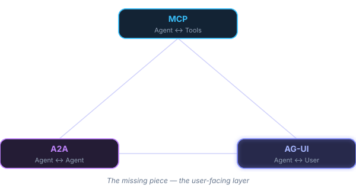
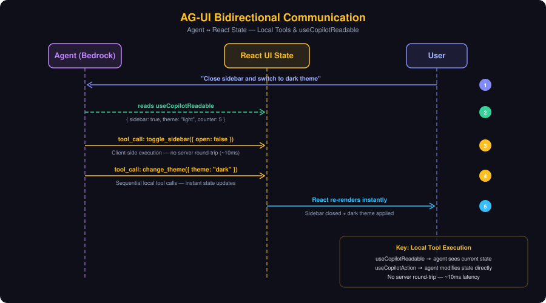
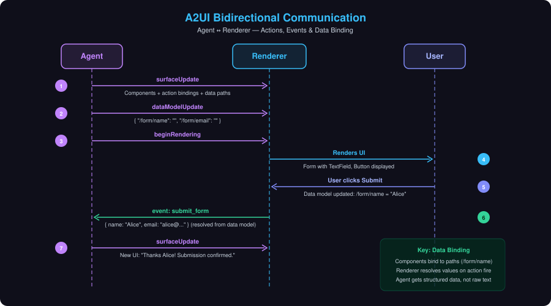
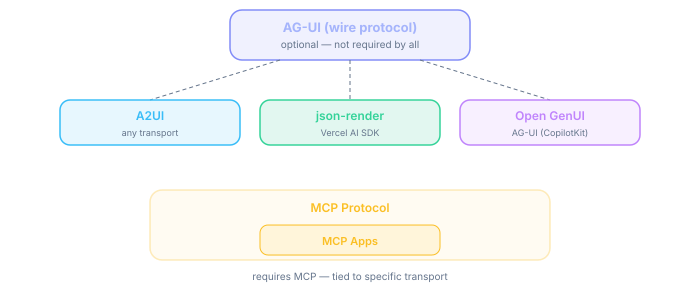

Wire Protocols & Generative UI — The Full Stack
Two problems. Multiple protocols. One coherent picture.
Key insight
Two separate problems are being conflated. The way agents communicate with UIs is different from what they render.
How do agent and UI communicate?
Like OpenAI's Chat API standardized LLM invocation — we need a standard for agent↔UI messaging.
What does the agent show?
What format describes the UI? How much freedom does the agent have? How is it rendered safely?
Orthogonal concerns. You need BOTH. Different protocols address different layers.
Three protocols complete the agentic ecosystem — each addressing a distinct layer:

Event-driven streaming protocol. 16 standard event types + extensible with custom events. Transport-agnostic.
NOT a generative UI spec — it's the pipe that carries them all.
Snapshot/delta pattern (RFC 6902 JSON Patch). Agent reads AND writes UI state.
SSE, binary HTTP, WebSocket. Middleware adapts any agent framework.
A2UI, Open-JSON-UI, Open GenUI can all be transported over AG-UI events.
Events stream Agent → UI. UI state flows back via RunAgentInput (the POST that starts each run).
Streaming content (text, tool args)
State synchronization (JSON Patch)
| Category | Events | Purpose |
|---|---|---|
| Lifecycle | RunStarted → RunFinished/Error | Track run progression |
| Text | Start → Content (δ) → End | Stream message content |
| Tool Calls | Start → Args (δ) → End → Result | Agent invokes tools |
| State | Snapshot / Delta | Sync agent ↔ UI state |
| Activity | Snapshot / Delta | Progress updates |
| Reasoning | Start → Content → End | Chain-of-thought visibility |
| Custom | name + value | Application extensions |
Key axis: Who controls the UI? Developer (pre-defined) vs Agent (generated at runtime). Within agent-generated, how much freedom: catalog-constrained vs fully open.
Transport-agnostic JSON streaming spec. Agent generates component tree, client renders from catalog.
Works over AG-UI, A2A, MCP, SSE, WebSocket. Not tied to any framework.
Components declare events; user clicks → action sent to agent with data context.
Use the basic 18-component catalog or define your own design system.
Prompt-first (v0.9): Schema injected into LLM prompt. Agent generates JSON. Validate. Retry if invalid.
4 message types streamed as JSONL:
createSurface — Initialize surface (ID, catalog, theme)
updateComponents — Flat adjacency-list of components (by ID)
updateDataModel — Populate data via JSON Pointers (RFC 6901)
deleteSurface — Remove the UI
Rendering: Client buffers components until root is defined, then renders the full tree. Dynamic updates arrive as additional messages.
The action message is the only client→server message type.
"context": { "email": { "path": "/formData/email" }, "itemId": "123" }
{ "path": "/formData/email" } → "jane@example.com"
{ "name": "submit_form", "context": { "email": "jane@example.com", "itemId": "123" } }
Server gets concrete values + complete state. Responds with new components/data.
A flag on createSurface, not a message type.
User types, toggles, selects...
Local data model updates reactively. No network calls.
Action fires
Client attaches full data model snapshot in transport metadata alongside the action.
Server receives
Action context (resolved values) + complete data model. Full picture at decision time.
Why: Minimizes network traffic. No keystroke-by-keystroke sync. Server gets consistent state at decision points.
Schema-constrained generative UI. Library (not protocol). Zod catalog defines guardrails.
TypeScript-first. AI can ONLY produce specs matching your catalog. Compile-time safety.
React, Vue, Svelte, Solid, React Native — same catalog.
LLM streams JSON token-by-token. Parser renders components as props complete.
How: defineCatalog() → catalog.prompt() auto-generates system prompt → AI generates constrained JSON → partial parser renders progressively.
Both: Agent generates JSON spec → client maps to real components from a catalog.
| Aspect | A2UI | json-render |
|---|---|---|
| Nature | Protocol (multi-vendor, Google) | Library (Vercel, Apache-2.0) |
| Schema | JSON Schema | Zod (TypeScript) |
| Transport | Any (AG-UI, A2A, MCP, SSE) | Vercel AI SDK |
| Output | JSONL stream (4 message types) | Single JSON tree (partial-parsed) |
| Bidirectional | Built-in (actions + events) | Actions call local handlers |
| Platforms | React, Lit, Angular, Flutter | React, Vue, Svelte, Solid, RN |
TL;DR: Same pattern. A2UI = open protocol (multi-vendor). json-render = typed library (Zod DX).
Full HTML/CSS/JS apps in sandboxed iframes inside MCP hosts.
Key: Pre-built by the MCP server developer and served from the backend. The client (host) simply renders them — no client-side control over the UI.
Key insight: If you don't own the client code, MCP Apps is today the only client-agnostic way to render rich interactive UI from an agent.
Any JS library (D3, Three.js, CesiumJS). No catalog constraints.
Works in any MCP host. No custom frontend code needed.
UI lives inside the conversation. No tab switching.
window.postMessage + JSON-RPC = secure tunnel between iframe and host.
<iframe sandbox>Sandbox blocks DOM access, cookies, parent navigation
ui/initialize via postMessageEstablishes JSON-RPC channel. Host confirms capabilities.
tools/call{"jsonrpc":"2.0","method":"tools/call","params":{"name":"get_data"},"id":1}
{"jsonrpc":"2.0","result":{"content":[...]},"id":1}
ui/sendMessage, ui/openLinkApp can inject messages into conversation or request navigation.
Agent generates raw HTML. Rendered in double-iframe sandbox. Disposable interfaces.
<CopilotKit openGenerativeUI={true}>
That's it. No catalog, no schema.
"Show me how electrons work" — throwaway visualizations
Shared mutable state. Both sides read AND write.

Unique to AG-UI: "If sidebar is closed, open it" — agent reasons about current UI state and acts on it. No server round-trip for state mutations.
Surface-scoped data model + action events. Event-driven, not continuous.

Key difference from AG-UI: Agent cannot read UI state on demand. It only receives data when the user explicitly acts (button click). No continuous sync.
Request/response
tools/callOne-directional + actions
Stateless
| Shared State | Agent Reads UI | UI Sends Events | Continuous Sync | |
|---|---|---|---|---|
| AG-UI | ✅ Snapshot+Delta | ✅ State in RunAgentInput | ✅ Frontend tools | ✅ Agent→UI streaming |
| A2UI | ✅ Data model/surface | ❌ | ✅ Action events | ✅ Agent→UI streaming |
| MCP Apps | ✅ Via postMessage | ❌ | ✅ Tool calls | ❌ Req/response |
| json-render | ✅ Via local handlers | ✅ Via local handlers | ✅ Actions (to local handlers) | ❌ |
| Open GenUI | ❌ | ❌ | ❌ | ❌ |
Takeaway: The richer the bidirectional model, the more the agent can reason about and react to current UI state.
Not a strict stack. Complementary protocols with different transports.

Complementary, not competing. A single app can use multiple.
How do you connect agent ↔ UI?
| Situation | Choice |
|---|---|
| Custom agentic frontend | AG-UI |
| MCP host (Claude, VS Code) | MCP |
| Multi-agent, sub-agent UI | A2A |
| Simple, no framework | Raw SSE |
What does the agent show?
| Situation | Choice |
|---|---|
| Branded, recurring flows | Controlled |
| Cross-platform, long-tail | A2UI |
| Design-system-safe | json-render |
| Don't own the client | MCP Apps |
| Throwaway visualizations | Open GenUI |
Independent choices. AG-UI + A2UI, or MCP + MCP Apps, or AG-UI + Open GenUI. Mix and match.
Controlled for critical flows + Open-ended for exploration
Human-in-the-loop via AG-UI interrupts
A2UI growing: React, Angular, Flutter, SwiftUI
More hosts adopting the standard